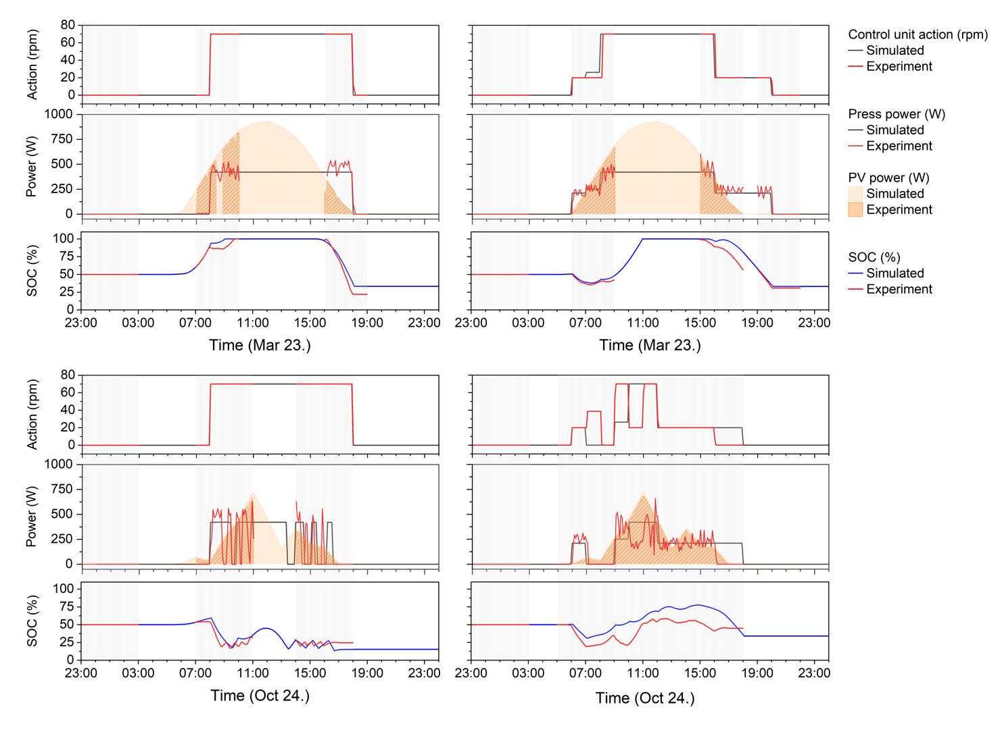

Components of the oil press

Reinforcement learning framework

Performance of the RL controller
@article{under review,
author = {under review},
title = {under review},
journal = {under review},
year = {under review},
}